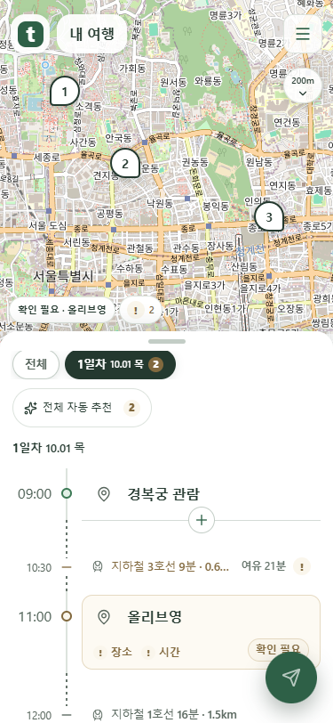
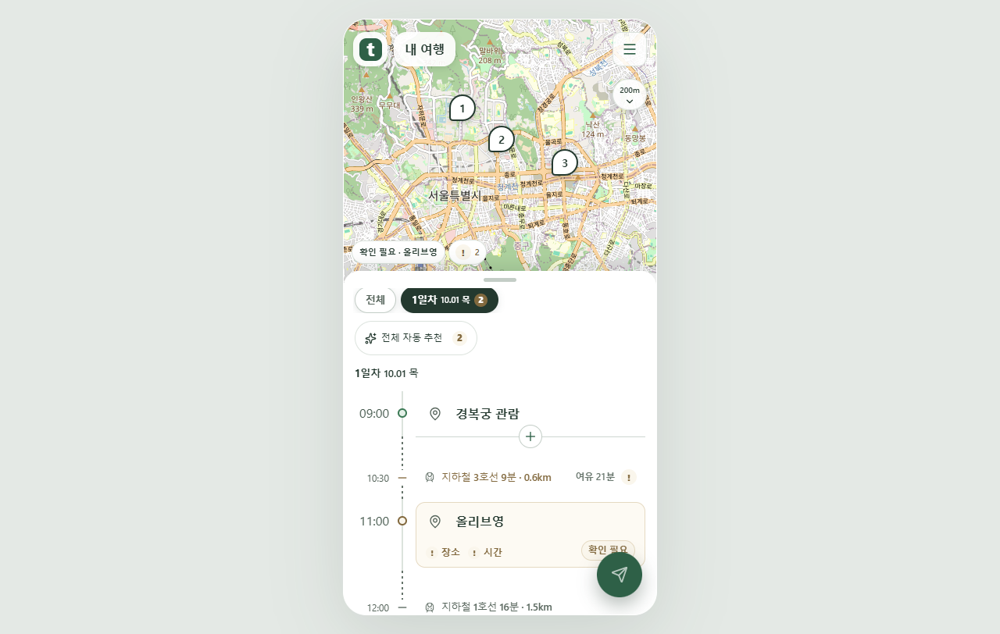
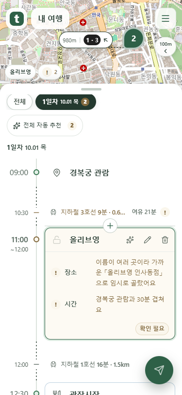
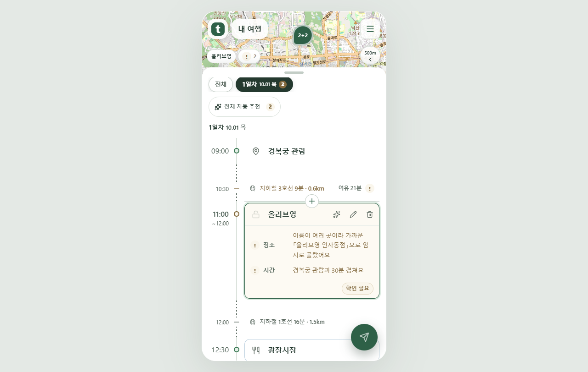
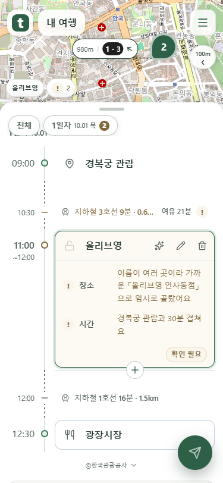
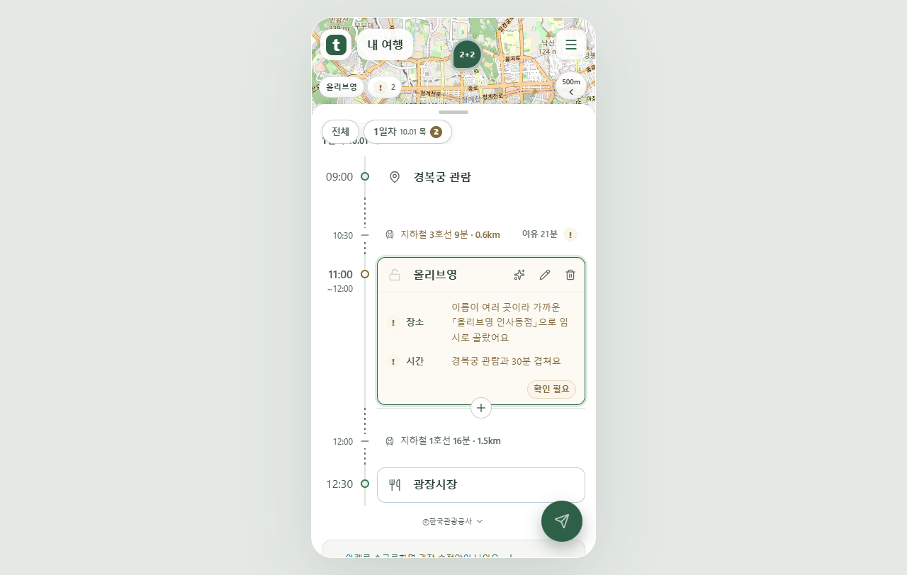

이전 + 위치 조정안은 취소하고 선택하신 가로선 형태를 적용했습니다. 실제 Chrome 화면입니다.
재생 버튼을 눌러 날짜와 가로선의 움직임을 함께 확인할 수 있습니다. 마우스를 올리거나 키보드 초점이 있을 때의 정지 동작은 화면 시험으로 확인했습니다.
날짜 줄과 선택 배경이 함께 0~2px 위아래로 움직입니다. 목록의 배치는 유지합니다.


현재 삽입 경계에 얇은 가로선을 표시하고 중앙에 원형 +를 둡니다. 선은 천천히 밝아졌다 돌아옵니다.


운영체제의 움직임 줄이기 설정에서는 날짜와 가로선 애니메이션을 모두 끕니다. 버튼과 선은 그대로 사용할 수 있습니다.

